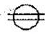
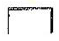
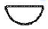
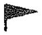
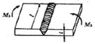

용접산업기사 (2016-08-21 기출문제)
1과목: 용접야금 및 용접설비제도
1. 예열 및 후열의 목적이 아닌 것은?
- 균열의 방지
- 기계적 성질 향상
- 잔류응력의 경감
- 균열감수성의 증가
(정답률: 83%)

2. 강의 오스테나이트 상태에서 냉각속도가 가장 빠를 때 나타나는 조직은?
- 펄라이트
- 소르바이트
- 마텐자이트
- 트루스타이트
(정답률: 65%)
3. 용착금속이 응고할 때 불순물이 한 곳으로 모이는 현상은?
- 공석
- 편석
- 석출
- 고용체
(정답률: 76%)
4. 6:4 황동에 1~2% Fe를 첨가한 것으로 강도가 크며 내식성이 좋아 광산기계, 선박용 기계, 화학기계 등에 이용되는 합금은?
- 톰백
- 라우탈
- 델타메탈
- 네이벌 황동
(정답률: 62%)
5. 스테인리스강에서 용접성이 가장 좋은 계통은?
- 페라이트계
- 펄라이트계
- 마텐자이트계
- 오스테나이트계
(정답률: 84%)
6. 용접 시 수소 원소에 의한 영향으로 옳은 것은?
- 수소는 용해도가 매우 높아 용접시 쉽게 흡수된다.
- 용접 중에 흡수되는 대부분의 수소는 기체수소로부터 공급된다.
- 수소는 용접 시 냉각 중에 균열 또는 은점 형성의 원인이 된다.
- 응력이 존재한 경우 격자 결함은 원자수소의 인력으로 작용하여 응력계(stress-system)를 증가시켜 탄성 인자로 작용한다.
(정답률: 73%)
7. 적열 취성에 가장 큰 영향을 미치는 것은?
- S
- P
- H2
- N2
(정답률: 83%)
8. 서브머지드 아크 용접 시 용융지에서 금속정련 반응이 일어날 때 용접금속의 청정도 및 인성과 매우 깊은 관계가 있는 것은?
- 플럭스(flux)의 입도
- 플럭스(flux)의 염기도
- 플럭스(flux)의 소결도
- 플럭스(flux)의 용융도
(정답률: 76%)
9. 잔류응력제거법 중 잔류응력이 있는 제품에 하중을 주어 용접부위에 약간의 소성변형을 일으킨 다음 하중을 제거하는 방법은?
- 피닝법
- 노내 풀림법
- 국부 풀림법
- 기계적 응력 완화법
(정답률: 78%)
10. 알루미늄과 그 합금의 용접성이 나쁜 이유로 틀린 것은?
- 비열과 열전도도가 대단히 커서 수축량이 크기 때문
- 용융 응고 시 수소가스를 흡수하여 기공이 발생하기 쉽기 때문
- 강에 비해 용접 후의 변형이 커 균열이 발생하기 쉽기 때문
- 산화알루미늄의 용융온도가 알루미늄의 용융온도보다 매우 낮기 때문
(정답률: 62%)
11. KS재료기호 중 SM 45C의 설명으로 옳은 것은?
- 기계 구조용강 중에 45종이다.
- 재질강도가 45MPa인 기계구조용강이다.
- 탄소 함유량 4.5%인 기계구조용주물이다.
- 탄소 함유량 0.45%인 기계 구조용 탄소강재이다.
(정답률: 73%)
12. 도면으로 사용된 용지의 안쪽에 그려진 내용이 확실히 구분되도록 그리는 윤곽선은 일반적으로 몇 ㎜이상의 실선으로 그리는가?
- 0.2㎜
- 0.25㎜
- 0.3㎜
- 0.5㎜
(정답률: 72%)
13. 대상물이 보이지 않는 부분을 표시하는데 쓰이는 선의 종류는?
- 굵은 실선
- 가는 파선
- 가는 실선
- 가는 이점쇄선
(정답률: 70%)
14. 기계나 장치 등의 실체를 보고 프리핸드(free hand)로 그린 도면은?
- 스케치도
- 부품도
- 배치도
- 기초도
(정답률: 89%)
15. 도면의 크기 중 AO용지의 넓이는 약 얼마인가?
- 0.25m2
- 0.5m2
- 0.8m2
- 1.0m2
(정답률: 77%)
16. 실형의 물건에 광명단 등 도료를 발라 용지에 찍어 스케치하는 방법은?
- 본뜨기법
- 프린트법
- 사진촬영법
- 프리핸드법
(정답률: 75%)
17. 선을 긋는 방법에 대한 설명으로 틀린 것은?
- 1점 쇄선은 긴 쪽 선으로 시작하고 끝나도록 긋는다.
- 파선이 서로 평행할 때에는 서로 엇갈리게 그린다.
- 실선과 파선이 서로 만나는 부분은 띄워지도록 그린다.
- 평행선은 선 간격을 선 굵기의 3배 이상으로 하여 긋는다.
(정답률: 40%)
18. 투상법에 대한 설명으로 틀린 것은?
- 투상 : 대상물의 형태를 평면상에 투영하는 것을 말한다.
- 시선 : 시점과 공간에 있는 점을 연결하는 선 및 그 연장선을 말한다.
- 투상선 시점과 대상물의 각 점을 연결하고 대상물의 형태를 투상면에 찍어내기 위해서 사용하는 선이다.
- 시점 : 공간에 있는 점을 시점과 다른 방향으로 무한정 멀리했을 경우에 시점과 투상면과의 교점이다.
(정답률: 58%)
19. 가는 실선으로 사용하는 선이 아닌 것은?
- 지시선
- 수준면선
- 무게중심선
- 치수보조선
(정답률: 66%)
20. 용접기호에 대한 명칭이 틀리게 짝지어진 것은?

: 스폿 용접
: 플러그 용접
: 뒷면 용접
: 현장 용접
(정답률: 78%)
2과목: 용접구조설계
21. 완전한 맞대기 용접이음의 굽힘모멘트(Mb)=12000N·㎜가 작용하고 있을 때 최대굽힘응력은 약 몇 N/mm2인가? (단, l=300㎜, t=25㎜)

- 0.324
- 0.344
- 0.384
- 0.424
(정답률: 44%)
22. 용접의 내부결함이 아닌 것은?
- 은점
- 피트
- 선상조직
- 비금속 개재물
(정답률: 48%)
23. 용접 지그에 대한 설명으로 틀린 것은?
- 잔류 응력을 제거하기 위한 것이다.
- 모재를 용접하기 쉬운 상태로 놓기 위한 것이다.
- 작업을 용이하게 하고 용접능률을 높이기 위한 것이다.
- 용접제품의 치수를 정확하게 하기위해 변형을 억제하는 것이다.
(정답률: 82%)
24. 용접 이음의 내식성에 영향을 미치는 요인이 아닌 것은?
- 슬래그
- 용접 자세
- 잔류응력
- 용접이음현상
(정답률: 80%)
25. 강판의 맞대기 용접이음에서 강판 두꺼운 판에 사용할 수 있으며 양면 용접에 의해 충분한 용입을 얻으려고 할 때 사용하는 홈의 형상은?
- V형
- U형
- I형
- H형
(정답률: 78%)
26. 불활성 가스 텅스텐 아크 용접에서 직류 역극성(DCRP)으로 용접할 경우 비드 폭과 용입에 대한 설명으로 옳은 것은?
- 용입이 깊고 비드 폭이 넓다.
- 용입이 깊고 비드 폭이 좁다.
- 용입이 얕고 비드 폭이 넓다.
- 용입이 얕고 비드 폭이 좁다.
(정답률: 70%)
27. 용접 후 실시하는 잔류 응력 완화법으로 틀린 것은?
- 도열법
- 저온 응력 완화법
- 응력 제거 풀림법
- 기계적 응력 완화법
(정답률: 81%)
28. 가용접 작업 시 주의사항으로 틀린 것은?
- 가용접 작업도 본 용접과 같은 온도롤 예열을 한다.
- 가용접 시 용접봉은 본 용접보다 굵은 것을 사용하여 견고하게 접합시키는 것이 좋다.
- 중요 부분은 용접 홈 내에 가접하는 것은 피한다. 부득이한 경우 본 용접 전 깎아내도록 한다.
- 가용접의 위치는 부품의 끝, 모리서, 각 등과 같이 단면이 급변하여 응력이 집중되는 곳은 피한다.
(정답률: 84%)
29. 결함 에코형태로 결함을 판정하는 방법으로 초음파 검사법의 종류중에서 가장 많이 사용하는 방법은?
- 투과법
- 공진법
- 타격법
- 펄스 반사법
(정답률: 65%)
30. 자기 비파괴 검사에서 사용하는 자화 방법이 아닌 것은?
- 형광법
- 극간법
- 관통법
- 축통전법
(정답률: 53%)
31. 재료 절약을 위한 용접설계 요령으로 틀린 것은?
- 안전하고 외관상 모양이 좋아야 한다.
- 용접 조립시간을 줄이도록 설계를 한다.
- 가능한 용접할 조각의 수를 늘려야 한다.
- 가능한 표준 규격의 부품이나 재료를 이용한다.
(정답률: 88%)
32. 용착금속의 인장 또는 파면 시험을 했을 경우 파단면에 나타나는 고기 눈 모양의 취약한 은백색 파면의 결함은?
- 기공
- 은점
- 오버랩
- 크레이터
(정답률: 87%)
33. 서브머지드 아크 용접 이음부 설계를 설명한 것으로 틀린 것은?
- 자동용접으로 정확한 이음부 홈 가공이 요구된다.
- 용접부 시작점과 끝점에는 엔드 탭을 부착하여 용접한다.
- 가로 수축량이 크므로 스트롱 백을 이용하여야 한다.
- 루트간격이 규정보다 넓으면 뒷댐판을 사용한다.
(정답률: 59%)
34. 방사선투과 검사의 장점에 대한 설명으로 틀린 것은?
- 모든 재질의 내부 결함 검사에 적용할 수 있다.
- 검사 결과를 필름에 영구적으로 기록할 수 있다.
- 미세한 표면 균열이나 라미네이터도 검출할 수 있다.
- 주변 재질과 비교하여 1% 이상의 흡수차를 나타내는 경우도 검출할 수 있다.
(정답률: 58%)
35. 용접이음에서 피로 강도에 영향을 미치는 인자가 아닌 것은?
- 이음 현상
- 용접 결함
- 하중 상태
- 용접기 종류
(정답률: 88%)
36. 맞대기 용접 이음에서 모재의 인장강도가 50N/mm2이고, 용접 시험편의 인장강도가 25N/mm2으로 나타났을 때 이음 효율은?
- 40%
- 50%
- 60%
- 70%
(정답률: 73%)
37. 석회석이나 형석을 주성분으로 사용한 것으로 용착 금속 중의 수소 함유량이 다른 용접봉에 비해 약 1/10 정도롤로 현저하게 적은 용접봉은?
- 저수소계
- 고산화티탄계
- 일미나이트계
- 철분산화티탄계
(정답률: 87%)
38. 접합하려는 두 모재를 겹쳐놓고 한 쪽의 모재에 드릴이나 밀링머신으로 둥근 구멍을 뚫고 그곳을 용접하는 이음은?
- 필릿 용접
- 플레어 용접
- 플러그 용접
- 맞대기 홈 용접
(정답률: 79%)
39. 용착법 중 단층 용착법이 아닌 것은?
- 스킨법
- 전진법
- 대칭법
- 빌드업법
(정답률: 77%)
40. 필릿 용접의 이음 강도를 계산할 때 목 길이 10㎜ 라면 목 두께는?
- 약 7㎜
- 약 10㎜
- 약 12㎜
- 약 15㎜
(정답률: 71%)
3과목: 용접일반 및 안전관리
41. 일반적으로 가스용접에서 사용하는 가스의 종류와 용기의 색상이 옳게 짝지어진 것은?
- 산소 - 황색
- 수소 - 주황색
- 탄산가스 - 녹색
- 아세틸렌 가스 - 백색
(정답률: 80%)
42. AW 300의 교류 아크 용접기로 조정할 수 있는 2차 전류(A) 값의 범위는?
- 30~220A
- 40~330A
- 60~330A
- 120~480A
(정답률: 63%)
43. 가스 절단 작업에서 프로판 가스와 아세틸렌가스를 사용하였을 경우를 비교한 사항으로 틀린 것은?
- 포갬 절단 속도는 프로판 가스를 사용하였을 때가 빠르다.
- 슬래그 제거가 쉬운 것은 프로판 가스를 사용하였을 경우이다.
- 후판 절단 시 절단 속도는 프로판 가스를 사용하였을 때가 빠르다.
- 점화가 쉽고 중성 불꽃을 만들기 쉬운 것은 프로판 가스를 사용하였을 경우이다.
(정답률: 51%)
44. 피복 아크 용접봉의 고착제에 해당되는 것은?
- 석면
- 망간
- 규소철
- 규산나트륨
(정답률: 44%)
45. 피복 아크 용접 작업의 기초적인 용접조건으로 가장 거리가 먼 것은?
- 오버랩
- 용접 속도
- 아크 길이
- 용접 전류
(정답률: 85%)
46. MIG 용접법의 특징에 대한 설명으로 틀린 것은?
- 전자세 용접이 불가능하다.
- 용접 속도가 빠르므로 모재의 변형이 적다.
- 피복아크용접에 비해 빠른 속도로 용접할 수 있다.
- 후판에 적합하고 각종 금속 용접에 다양하게 적용할 수 있다.
(정답률: 70%)
47. 아크 빛으로 인해 눈에 급성 염증증상이 발생하였을 때 우선 조치해야 할 사항으로 옳은 것은?
- 온수로 씻은 후 작업한다.
- 소금물로 씻은 후 작업한다.
- 냉습포를 눈 위에 얹고 안정을 취한다.
- 심각한 사안이 아니므로 계속 작업한다.
(정답률: 88%)
48. 구리 및 구리합금의 가스용접용 용제에 사용되는 물질은?
- 붕사
- 염화칼슘
- 황산칼륨
- 중탄산소다
(정답률: 83%)
49. 피복 아크 용접에서 자기 불림(magnetic blow)의 방지책으로 틀린 것은?
- 교류 용접을 한다.
- 접지점을 2개로 연결한다.
- 접지점을 용접부에 가깝게 한다.
- 용접부가 긴 경우는 후퇴 용접법으로 한다.
(정답률: 69%)
50. 텅스텐 전극봉을 사용하는 용접은?
- TIG 용접
- MIG 용접
- 피복 아크 용접
- 산소-아세틸렌 용접
(정답률: 87%)
51. 용접 자동화에 대한 설명으로 틀린 것은?
- 생산성이 향상된다.
- 용접봉의 손실이 많아진다.
- 외관이 균일하고 양호하다.
- 용접부의 기계적 성질이 향상된다.
(정답률: 87%)
52. 티그(TIG)용접 시 보호가스로 쓰이는 아르곤과 헬륨의 특징을 비교할 때 틀린 것은?
- 헬륨은 용접 입열이 많으므로 후판 용접에 적합하다.
- 헬륨은 열영향부(HAZ)가 아르곤보다 좁고 용입이 깊다.
- 아르곤은 헬륨보다 가스소모량이 적고 수동용접에 많이 쓰인다.
- 헬륨은 위보기 자세나 수직 자세 용접에서 아르곤보다 효율이 떨어진다.
(정답률: 58%)
53. 가스 절단을 할 때 사용되는 예열 가스 중 최고 불꽃 온도가 가장 높은 것은?
- CH4
- C2H2
- H2
- C3H8
(정답률: 58%)
54. 이음부의 루트 간격 치수에 특히 유의하여야 하며, 아크가 보이지 않는 상태에서 용접이 진행된다고하여 잠호 용접이라고도 부르는 용접은?
- 피복 아크 용접
- 탄산가스 아크 용접
- 서브머지드 아크 용접
- 불활성가스 금속 아크 용접
(정답률: 88%)
55. 가스용접에 쓰이는 가연성 가스의 조건으로 옳은 것은?
- 발열량이 적어야 한다.
- 연소속도가 느려야 한다.
- 불꽃의 온도가 낮아야 한다.
- 용융금속과 화학반응을 일으키지 않아야 한다.
(정답률: 82%)
56. 탄소전극과 모재와의 사이에 아크를 발생시켜 고압의 공기로 용융금속을 불어내어 홈을 파는 방법은?
- 불꽃 가우징
- 기계적 가우징
- 아크 에어 가우징
- 산소·수소 가우징
(정답률: 89%)
57. 용접기의 전원 스위치를 넣기 전에 점검해야 할 사항으로 틀린 것은?
- 냉각팬의 회전부에는 윤활유를 주입해서는 안된다.
- 용접기가 전원에 잘 접속되어 있는지 점검한다.
- 용접기의 케이스에서 접지선이 이어져 있는지 점검한다.
- 결선부의 나사가 풀어진 곳이나 케이블의 손상된 곳은 없는지 점검한다.
(정답률: 80%)
58. 가스 용접에서 황동은 무슨 불꽃으로 용접하는 것이 가장 좋은가?
- 탄화 불꽃
- 산화 불꽃
- 중성 불꽃
- 약한 탄화 불꽃
(정답률: 63%)
59. 수소가스 분위이게 있는 2개의 텅스텐 전극봉 사이에서 아크를 발생시키는 용접법은?
- 스터드 용접
- 레이저 용접
- 전자 빔 용접
- 원자 수소 아크 용접
(정답률: 70%)
60. Aw-240용접기로 180A를 이용하여 용접한다면, 허용 사용율은 약 몇 %인가? (단, 정격 사용율은 40%이다.)
- 51
- 61
- 71
- 81
(정답률: 53%)